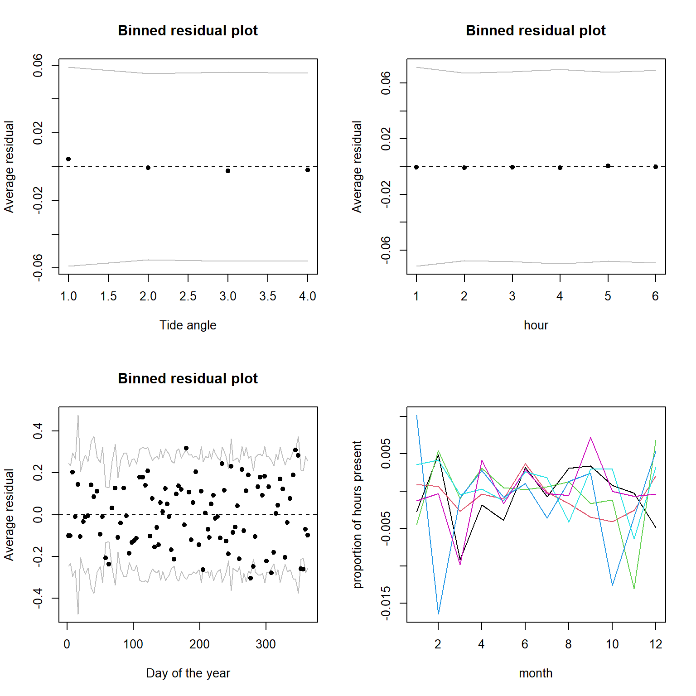
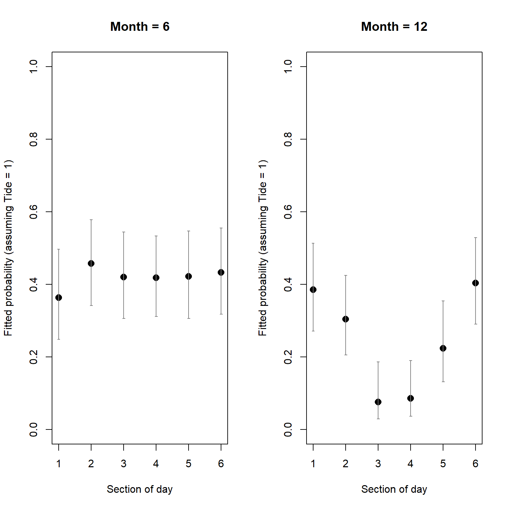

Exercise Solutions
Optional extension to Binomial (Bernoulli) GLM - dolphin behavioural plasticity
This extension to the dolphin data analysis is for those who may be a bit ahead and would like to :
- get some experience dealing with interactions between categorical predictors (relevant to both LMs and GLMs)
- test your understanding of the binomial GLMs for the analysis of Bernoulli data, by repeating the approach of the previous exercise with a slightly more advanced model:
- model specification
- model validation
- interpreting a model graphically
- get more experience with model selection in GLMs (using AIC)
I recommend you continue with your previous R script for the GLM_2 exercise, in your RStudio Project.
13. To address the limitations of the previous analysis, fit a new model with categorical predictors only, and interactions between them, two by two: fTide4 + fMonth + fTime6 + fTide4:fMonth + fTide4:fTime6 + fMonth:fTime6. What hypotheses do these interactions correspond to?
PA2<- glm(presence ~ fTide4 + fMonth + fTime6 +
fTide4:fMonth + fTide4:fTime6 +
fMonth:fTime6, family= binomial, data= dat)
summary(PA2) # inspect the model coefficients
##
## Call:
## glm(formula = presence ~ fTide4 + fMonth + fTime6 + fTide4:fMonth +
## fTide4:fTime6 + fMonth:fTime6, family = binomial, data = dat)
##
## Deviance Residuals:
## Min 1Q Median 3Q Max
## -1.5115 -0.8427 -0.5549 1.0741 2.9924
##
## Coefficients:
## Estimate Std. Error z value Pr(>|z|)
## (Intercept) -1.736653 0.456987 -3.800 0.000145 ***
## fTide42 0.091884 0.459802 0.200 0.841611
## fTide43 -0.583025 0.516274 -1.129 0.258774
## fTide44 -0.008886 0.483203 -0.018 0.985329
## fMonth2 -0.388569 0.766729 -0.507 0.612303
## fMonth3 -0.514044 0.774513 -0.664 0.506883
## fMonth4 1.513584 0.538675 2.810 0.004957 **
## fMonth5 0.993961 0.547169 1.817 0.069286 .
## fMonth6 0.591142 0.561093 1.054 0.292087
## fMonth7 1.635041 0.542026 3.017 0.002557 **
## fMonth8 1.208554 0.535759 2.256 0.024084 *
## fMonth9 0.844215 0.556850 1.516 0.129506
## fMonth10 1.956297 0.554080 3.531 0.000414 ***
## fMonth11 2.494588 0.540074 4.619 3.86e-06 ***
## fMonth12 1.301942 0.556494 2.340 0.019307 *
## fTime6AM1 0.426159 0.543223 0.785 0.432747
## fTime6AM2 -0.733075 0.600867 -1.220 0.222454
## fTime6MDay -2.286839 1.095177 -2.088 0.036789 *
## fTime6PM1 -0.144138 0.562167 -0.256 0.797644
## fTime6PM2 0.964092 0.524844 1.837 0.066223 .
## fTide42:fMonth2 -0.234073 0.734572 -0.319 0.749990
## fTide43:fMonth2 0.103220 0.787867 0.131 0.895766
## fTide44:fMonth2 0.380628 0.723850 0.526 0.599000
## fTide42:fMonth3 -0.294141 0.677149 -0.434 0.664012
## fTide43:fMonth3 -0.851279 0.769553 -1.106 0.268641
## fTide44:fMonth3 -1.230419 0.819837 -1.501 0.133405
## fTide42:fMonth4 -0.356522 0.541811 -0.658 0.510526
## fTide43:fMonth4 -0.028836 0.587107 -0.049 0.960827
## fTide44:fMonth4 0.219313 0.563589 0.389 0.697175
## fTide42:fMonth5 -0.290937 0.490591 -0.593 0.553158
## fTide43:fMonth5 -0.165659 0.538676 -0.308 0.758440
## fTide44:fMonth5 -0.270988 0.529477 -0.512 0.608790
## fTide42:fMonth6 0.279671 0.516911 0.541 0.588478
## fTide43:fMonth6 1.203798 0.551037 2.185 0.028918 *
## fTide44:fMonth6 0.715606 0.541204 1.322 0.186085
## fTide42:fMonth7 -0.528256 0.500883 -1.055 0.291585
## fTide43:fMonth7 -0.043550 0.544981 -0.080 0.936309
## fTide44:fMonth7 0.162778 0.526721 0.309 0.757291
## fTide42:fMonth8 -0.319598 0.498437 -0.641 0.521393
## fTide43:fMonth8 0.141297 0.540692 0.261 0.793840
## fTide44:fMonth8 -0.055742 0.532116 -0.105 0.916570
## fTide42:fMonth9 0.204099 0.547755 0.373 0.709438
## fTide43:fMonth9 0.715113 0.592643 1.207 0.227567
## fTide44:fMonth9 0.566067 0.572839 0.988 0.323065
## fTide42:fMonth10 -0.795445 0.515501 -1.543 0.122818
## fTide43:fMonth10 -0.243968 0.562353 -0.434 0.664409
## fTide44:fMonth10 -0.418649 0.560011 -0.748 0.454718
## fTide42:fMonth11 -0.574539 0.510283 -1.126 0.260198
## fTide43:fMonth11 -0.877165 0.569594 -1.540 0.123565
## fTide44:fMonth11 -0.979858 0.554718 -1.766 0.077327 .
## fTide42:fMonth12 -0.042667 0.526466 -0.081 0.935407
## fTide43:fMonth12 0.287455 0.573504 0.501 0.616212
## fTide44:fMonth12 -0.559902 0.604505 -0.926 0.354334
## fTide42:fTime6AM1 -0.122861 0.310170 -0.396 0.692025
## fTide43:fTime6AM1 0.104056 0.329629 0.316 0.752248
## fTide44:fTime6AM1 -0.434900 0.317424 -1.370 0.170658
## fTide42:fTime6AM2 0.620587 0.377733 1.643 0.100398
## fTide43:fTime6AM2 0.706911 0.381577 1.853 0.063939 .
## fTide44:fTime6AM2 0.102259 0.369192 0.277 0.781795
## fTide42:fTime6MDay 0.004338 0.349060 0.012 0.990084
## fTide43:fTime6MDay 0.171084 0.362711 0.472 0.637154
## fTide44:fTime6MDay -0.576757 0.332160 -1.736 0.082496 .
## fTide42:fTime6PM1 0.003292 0.332238 0.010 0.992094
## fTide43:fTime6PM1 0.211593 0.359225 0.589 0.555844
## fTide44:fTime6PM1 0.007826 0.343038 0.023 0.981799
## fTide42:fTime6PM2 0.124299 0.336439 0.369 0.711788
## fTide43:fTime6PM2 0.195782 0.342441 0.572 0.567508
## fTide44:fTime6PM2 0.028964 0.328197 0.088 0.929676
## fMonth2:fTime6AM1 -0.182046 0.811974 -0.224 0.822600
## fMonth3:fTime6AM1 0.668004 0.878482 0.760 0.447011
## fMonth4:fTime6AM1 -0.823819 0.659069 -1.250 0.211309
## fMonth5:fTime6AM1 0.351414 0.630135 0.558 0.577063
## fMonth6:fTime6AM1 0.101034 0.637975 0.158 0.874168
## fMonth7:fTime6AM1 -0.129462 0.631961 -0.205 0.837683
## fMonth8:fTime6AM1 -0.202794 0.614688 -0.330 0.741465
## fMonth9:fTime6AM1 -1.180274 0.636964 -1.853 0.063887 .
## fMonth10:fTime6AM1 -0.952876 0.634174 -1.503 0.132956
## fMonth11:fTime6AM1 -0.967854 0.624448 -1.550 0.121157
## fMonth12:fTime6AM1 -0.761817 0.640082 -1.190 0.233973
## fMonth2:fTime6AM2 -0.290430 0.900506 -0.323 0.747060
## fMonth3:fTime6AM2 0.022688 1.113777 0.020 0.983748
## fMonth4:fTime6AM2 -0.267542 0.691236 -0.387 0.698720
## fMonth5:fTime6AM2 1.277617 0.653995 1.954 0.050754 .
## fMonth6:fTime6AM2 0.353497 0.664671 0.532 0.594839
## fMonth7:fTime6AM2 0.558089 0.648408 0.861 0.389400
## fMonth8:fTime6AM2 0.306463 0.647120 0.474 0.635799
## fMonth9:fTime6AM2 -1.157571 0.704973 -1.642 0.100588
## fMonth10:fTime6AM2 -0.883833 0.666616 -1.326 0.184889
## fMonth11:fTime6AM2 -2.119493 0.757004 -2.800 0.005113 **
## fMonth12:fTime6AM2 -1.817799 0.802722 -2.265 0.023541 *
## fMonth2:fTime6MDay 1.495156 1.389682 1.076 0.281973
## fMonth3:fTime6MDay 1.887648 1.436385 1.314 0.188790
## fMonth4:fTime6MDay 1.643026 1.146531 1.433 0.151846
## fMonth5:fTime6MDay 2.956139 1.142440 2.588 0.009666 **
## fMonth6:fTime6MDay 2.579822 1.139519 2.264 0.023577 *
## fMonth7:fTime6MDay 2.111067 1.141834 1.849 0.064481 .
## fMonth8:fTime6MDay 2.505544 1.131455 2.214 0.026798 *
## fMonth9:fTime6MDay 1.490101 1.149239 1.297 0.194770
## fMonth10:fTime6MDay -0.296222 1.226470 -0.242 0.809149
## fMonth11:fTime6MDay 0.791483 1.149040 0.689 0.490936
## fMonth12:fTime6MDay 0.435567 1.207048 0.361 0.718209
## fMonth2:fTime6PM1 -0.839212 0.932177 -0.900 0.367976
## fMonth3:fTime6PM1 -12.636828 217.109041 -0.058 0.953585
## fMonth4:fTime6PM1 -1.164543 0.669107 -1.740 0.081781 .
## fMonth5:fTime6PM1 0.298445 0.647383 0.461 0.644797
## fMonth6:fTime6PM1 0.317729 0.647974 0.490 0.623892
## fMonth7:fTime6PM1 -0.598478 0.644820 -0.928 0.353339
## fMonth8:fTime6PM1 -0.523132 0.644427 -0.812 0.416919
## fMonth9:fTime6PM1 -0.868811 0.672927 -1.291 0.196672
## fMonth10:fTime6PM1 -0.676389 0.653847 -1.034 0.300914
## fMonth11:fTime6PM1 -1.158308 0.637850 -1.816 0.069377 .
## fMonth12:fTime6PM1 -0.744472 0.676721 -1.100 0.271281
## fMonth2:fTime6PM2 -1.500206 0.861955 -1.740 0.081777 .
## fMonth3:fTime6PM2 0.264422 0.878167 0.301 0.763334
## fMonth4:fTime6PM2 -2.372324 0.662130 -3.583 0.000340 ***
## fMonth5:fTime6PM2 -0.465887 0.608355 -0.766 0.443787
## fMonth6:fTime6PM2 -0.841556 0.613093 -1.373 0.169865
## fMonth7:fTime6PM2 -0.660396 0.599648 -1.101 0.270763
## fMonth8:fTime6PM2 -1.603815 0.626542 -2.560 0.010474 *
## fMonth9:fTime6PM2 -2.018865 0.619859 -3.257 0.001126 **
## fMonth10:fTime6PM2 -0.881468 0.591153 -1.491 0.135935
## fMonth11:fTime6PM2 -1.115632 0.597317 -1.868 0.061798 .
## fMonth12:fTime6PM2 -1.000925 0.608876 -1.644 0.100199
## ---
## Signif. codes: 0 '***' 0.001 '**' 0.01 '*' 0.05 '.' 0.1 ' ' 1
##
## (Dispersion parameter for binomial family taken to be 1)
##
## Null deviance: 5738.9 on 4999 degrees of freedom
## Residual deviance: 5097.1 on 4877 degrees of freedom
## AIC: 5343.1
##
## Number of Fisher Scoring iterations: 14
# fTide4:fMonth assumes that the effect of tidal state on dolphin presence
# (actually, probability of recording) changes according to time of year
# fTide4:fTime6 assumes that the effect of tidal state on dolphin presence
# changes according to time of day (or vice-versa)
# fMonth:fTime6 assumes that the effect of time of day on dolphin presence
# changes according to time of year
14. Perform model selection “by hand” using the AIC, and construct an AIC table, using the example in the lecture. “By hand” means without using drop1 or step functions. You can get the AIC value from the model summary summary(YourModel) or by typing AIC(YourModel). There are 18 possible models in total, including the full model above. You can choose to evaluate all 18 models in a completely exploratory (the “ignorant and brave”) approach, or only a selection of models based on more specific research questions or predictions of your own (the “clear thinker” approach).
- Example: “We know/expect that dolphins are affected by A, B and C, but I suspect that the effect of B varies depending on the value of A whereas my colleague thinks that the effect of B depends on the value of C”, which would suggest comparing the following models to find out which hypothesis is best supported by the data:
- A + B + C + A:B
- A + B + C + B:C
- A + B + C
# Because I don't have specific predictions here, and I suspect the presence
# of dolphins at Sutors may respond to all combinations of the 3 environmental
# factors we have, I'll go for a quite systematic exploration here (you may
# have a different logic, knowledge about dolphins, more specific predictions,
# and a more restricted list of models you consider plausible: that would be
# entirely fine)
# remove interactions one-at-a-time
PA21<- glm(presence ~ fMonth + fTide4 + fTime6 + fMonth:fTide4 + fMonth:fTime6, family= binomial, data= dat)
PA22<- glm(presence ~ fMonth + fTide4 + fTime6 + fMonth:fTime6 + fTide4:fTime6, family= binomial, data= dat)
PA23<- glm(presence ~ fMonth + fTide4 + fTime6 + fMonth:fTide4 + fTide4:fTime6, family= binomial, data= dat)
# remove interactions two-at-a-time
PA24<- glm(presence ~ fMonth + fTide4 + fTime6 + fMonth:fTime6, family= binomial, data= dat)
PA25<- glm(presence ~ fMonth + fTide4 + fTime6 + fTide4:fTime6, family= binomial, data= dat)
PA26<- glm(presence ~ fMonth + fTide4 + fTime6 + fMonth:fTide4, family= binomial, data= dat)
# remove all interactions
PA27<- glm(presence ~ fMonth + fTide4 + fTime6, family= binomial, data= dat)
AIC(PA2)
## [1] 5343.076
AIC(PA21)
## [1] 5326.557
AIC(PA22)
## [1] 5328.189
AIC(PA23)
## [1] 5405.739
AIC(PA24)
## [1] 5310.091
AIC(PA25)
## [1] 5387.219
AIC(PA26)
## [1] 5391.219
AIC(PA27)
## [1] 5371.901
# PA24 seems best so far
# remove the main effect not involved in the interaction of PA24 (fTide4)
PA28<- glm(presence ~ fMonth + fTime6 + fMonth:fTime6, family= binomial, data= dat)
AIC(PA28)
## [1] 5315.361
# we could simplify further, but it is unlikely that simpler models
# would be supported based on what we know, so I'll stop here
# Constructing a table
# (you can do this with pen and paper, or in R, for example like this)
ModelStructure<- c(
"fTide4 * fMonth + fTide4 * fTime6 + fMonth * fTime6",
"fMonth + fTide4 + fTime6 + fMonth:fTide4 + fMonth:fTime6",
"fMonth + fTide4 + fTime6 + fMonth:fTime6 + fTide4:fTime6" ,
"fMonth + fTide4 + fTime6 + fMonth:fTide4 + fTide4:fTime6",
"fMonth + fTide4 + fTime6 + fMonth:fTime6",
"fMonth + fTide4 + fTime6 + fTide4:fTime6",
"fMonth + fTide4 + fTime6 + fMonth:fTide4",
"fMonth + fTide4 + fTime6",
"fMonth + fTime6 + fMonth:fTime6")
AICval<- c(AIC(PA2),
AIC(PA21),
AIC(PA22),
AIC(PA23),
AIC(PA24),
AIC(PA25),
AIC(PA26),
AIC(PA27),
AIC(PA28))
ModelName<- c("PA2",
"PA21",
"PA22",
"PA23",
"PA24",
"PA25",
"PA26",
"PA27",
"PA28")
# combine models and AIC values in a table
ModSelTab<- data.frame(model= ModelName, structure= ModelStructure, AIC= AICval)
# sort the table by increasing AIC value
ModSelTab<- ModSelTab[order(ModSelTab$AIC), ]
# compute AIC differences with best model, and round to 2 decimals
ModSelTab$delta<- round(ModSelTab$AIC - ModSelTab$AIC[1], 2)
# compute AIC weight, and round to 2 decimals
ModSelTab$weight<- round(exp(-ModSelTab$delta / 2) / sum(exp(-ModSelTab$delta / 2)), 2)require(knitr)
kable(ModSelTab)| model | structure | AIC | delta | weight | |
|---|---|---|---|---|---|
| 5 | PA24 | fMonth + fTide4 + fTime6 + fMonth:fTime6 | 5310.091 | 0.00 | 0.93 |
| 9 | PA28 | fMonth + fTime6 + fMonth:fTime6 | 5315.361 | 5.27 | 0.07 |
| 2 | PA21 | fMonth + fTide4 + fTime6 + fMonth:fTide4 + fMonth:fTime6 | 5326.557 | 16.47 | 0.00 |
| 3 | PA22 | fMonth + fTide4 + fTime6 + fMonth:fTime6 + fTide4:fTime6 | 5328.189 | 18.10 | 0.00 |
| 1 | PA2 | fTide4 * fMonth + fTide4 * fTime6 + fMonth * fTime6 | 5343.076 | 32.99 | 0.00 |
| 8 | PA27 | fMonth + fTide4 + fTime6 | 5371.901 | 61.81 | 0.00 |
| 6 | PA25 | fMonth + fTide4 + fTime6 + fTide4:fTime6 | 5387.219 | 77.13 | 0.00 |
| 7 | PA26 | fMonth + fTide4 + fTime6 + fMonth:fTide4 | 5391.219 | 81.13 | 0.00 |
| 4 | PA23 | fMonth + fTide4 + fTime6 + fMonth:fTide4 + fTide4:fTime6 | 5405.739 | 95.65 | 0.00 |
# Model PA24 is far ahead, with an AIC more than 5 units lower than the next best model.
# It attracts almost all the AIC weight, accordingly.
# Depending on the set of models you decided to compare,
# your best model and AIC weights may vary from mine.
15. Do the validation of your best model, using the approach taken in question 7.
res24.p<- resid(PA24, type= "pearson")
library(arm)
par(mfrow= c(2, 2))
binnedplot(x= as.numeric(dat$fTide4), y= res24.p, xlab= "Tide angle", nclass= 100)
# okay
binnedplot(x= as.numeric(dat$fTime6), y= res24.p, xlab= "hour")
# okay
binnedplot(x= dat$julianday, y= res24.p, xlab= "Day of the year", nclass= 100)
# okay
# We could also check seasonal variation in diel pattern ("time by season" interaction):
matplot(tapply(res24.p, list(dat$mon, dat$fTime6), mean), type= "l",
xlab= "month", ylab= "proportion of hours present", lty= 1)
# Residual variation is tiny (check y-axis and compare with Question 9);
# no consistent pattern of variation. Pretty good!
# There are few assumptions for the Bernoulli distribution other than
# observations being zeros and ones.
# Some assumptions valid for all models still apply here, such as: model
# correctly specified; independent
# residuals. The latter is violated in this data set, due to consecutive
# measurements in time. This issue
# is explored in the linked paper, using mixed models for non-independent data
# (covered in the course BI5302).
# The paper also uses GAMs (Generalised Additive Models, an extension of GLMs)
# for avoiding the discretization of continuous variables, and
# accounting for the cyclicity of the predictors (estimates at each end should
# match, e.g. 31st Dec-1st Jan, or 23:59 - 00:00)
16. Interpret the model, using plots of the predictions (use the approach taken in question 9) .
# Model PA24 assumes that dolphin presence (actually, probability of recording)
# changes according to time of year, time of day and tidal stage, and that the
# effect of time of day changes with the time of year (fMonth:fTime6).
summary(PA24)
##
## Call:
## glm(formula = presence ~ fMonth + fTide4 + fTime6 + fMonth:fTime6,
## family = binomial, data = dat)
##
## Deviance Residuals:
## Min 1Q Median 3Q Max
## -1.2733 -0.8636 -0.5617 1.1534 2.9595
##
## Coefficients:
## Estimate Std. Error z value Pr(>|z|)
## (Intercept) -1.64415 0.38590 -4.261 2.04e-05 ***
## fMonth2 -0.23790 0.61045 -0.390 0.696748
## fMonth3 -0.89331 0.70966 -1.259 0.208110
## fMonth4 1.47415 0.45998 3.205 0.001352 **
## fMonth5 0.80539 0.47239 1.705 0.088208 .
## fMonth6 1.08256 0.47037 2.301 0.021364 *
## fMonth7 1.52380 0.46019 3.311 0.000929 ***
## fMonth8 1.11535 0.45483 2.452 0.014197 *
## fMonth9 1.21898 0.44379 2.747 0.006019 **
## fMonth10 1.54792 0.45375 3.411 0.000646 ***
## fMonth11 1.83358 0.44164 4.152 3.30e-05 ***
## fMonth12 1.17666 0.46218 2.546 0.010901 *
## fTide42 -0.11702 0.09660 -1.211 0.225763
## fTide43 -0.30872 0.09891 -3.121 0.001801 **
## fTide44 -0.23268 0.09807 -2.373 0.017660 *
## fTime6AM1 0.30910 0.50874 0.608 0.543469
## fTime6AM2 -0.37350 0.53474 -0.698 0.484882
## fTime6MDay -2.41382 1.07781 -2.240 0.025120 *
## fTime6PM1 -0.12247 0.52354 -0.234 0.815050
## fTime6PM2 0.99681 0.47657 2.092 0.036471 *
## fMonth2:fTime6AM1 -0.33296 0.79113 -0.421 0.673852
## fMonth3:fTime6AM1 0.56488 0.85542 0.660 0.509022
## fMonth4:fTime6AM1 -0.92433 0.64061 -1.443 0.149056
## fMonth5:fTime6AM1 0.30708 0.61897 0.496 0.619815
## fMonth6:fTime6AM1 0.08137 0.62534 0.130 0.896472
## fMonth7:fTime6AM1 -0.15093 0.62037 -0.243 0.807779
## fMonth8:fTime6AM1 -0.20235 0.60423 -0.335 0.737710
## fMonth9:fTime6AM1 -1.24727 0.62484 -1.996 0.045917 *
## fMonth10:fTime6AM1 -0.95738 0.62061 -1.543 0.122920
## fMonth11:fTime6AM1 -0.85615 0.60744 -1.409 0.158701
## fMonth12:fTime6AM1 -0.67218 0.62834 -1.070 0.284717
## fMonth2:fTime6AM2 -0.35142 0.88142 -0.399 0.690112
## fMonth3:fTime6AM2 -0.09895 1.07867 -0.092 0.926908
## fMonth4:fTime6AM2 -0.26743 0.66937 -0.400 0.689508
## fMonth5:fTime6AM2 1.28053 0.63995 2.001 0.045393 *
## fMonth6:fTime6AM2 0.61323 0.64744 0.947 0.343557
## fMonth7:fTime6AM2 0.55066 0.63392 0.869 0.385038
## fMonth8:fTime6AM2 0.29451 0.63417 0.464 0.642362
## fMonth9:fTime6AM2 -1.12461 0.69018 -1.629 0.103220
## fMonth10:fTime6AM2 -0.87941 0.65261 -1.348 0.177807
## fMonth11:fTime6AM2 -2.14682 0.74197 -2.893 0.003811 **
## fMonth12:fTime6AM2 -1.65592 0.78777 -2.102 0.035550 *
## fMonth2:fTime6MDay 1.38586 1.38230 1.003 0.316064
## fMonth3:fTime6MDay 1.90559 1.42825 1.334 0.182133
## fMonth4:fTime6MDay 1.61553 1.14221 1.414 0.157245
## fMonth5:fTime6MDay 2.96495 1.13909 2.603 0.009244 **
## fMonth6:fTime6MDay 2.64493 1.13503 2.330 0.019792 *
## fMonth7:fTime6MDay 2.10969 1.13793 1.854 0.063743 .
## fMonth8:fTime6MDay 2.49968 1.12796 2.216 0.026683 *
## fMonth9:fTime6MDay 1.40500 1.14584 1.226 0.220132
## fMonth10:fTime6MDay -0.19915 1.21907 -0.163 0.870234
## fMonth11:fTime6MDay 0.88304 1.14196 0.773 0.439364
## fMonth12:fTime6MDay 0.51470 1.20228 0.428 0.668579
## fMonth2:fTime6PM1 -0.97086 0.92121 -1.054 0.291931
## fMonth3:fTime6PM1 -12.74694 221.61939 -0.058 0.954133
## fMonth4:fTime6PM1 -1.20467 0.66213 -1.819 0.068852 .
## fMonth5:fTime6PM1 0.29520 0.64304 0.459 0.646189
## fMonth6:fTime6PM1 0.36786 0.64121 0.574 0.566177
## fMonth7:fTime6PM1 -0.61913 0.63849 -0.970 0.332209
## fMonth8:fTime6PM1 -0.54886 0.63604 -0.863 0.388179
## fMonth9:fTime6PM1 -0.92905 0.66699 -1.393 0.163649
## fMonth10:fTime6PM1 -0.67431 0.64306 -1.049 0.294358
## fMonth11:fTime6PM1 -1.07160 0.62588 -1.712 0.086868 .
## fMonth12:fTime6PM1 -0.65547 0.66750 -0.982 0.326114
## fMonth2:fTime6PM2 -1.51818 0.84964 -1.787 0.073963 .
## fMonth3:fTime6PM2 -0.06066 0.83723 -0.072 0.942237
## fMonth4:fTime6PM2 -2.37033 0.65084 -3.642 0.000271 ***
## fMonth5:fTime6PM2 -0.46996 0.59774 -0.786 0.431732
## fMonth6:fTime6PM2 -0.70634 0.60001 -1.177 0.239116
## fMonth7:fTime6PM2 -0.65386 0.58731 -1.113 0.265570
## fMonth8:fTime6PM2 -1.57322 0.61499 -2.558 0.010524 *
## fMonth9:fTime6PM2 -1.92208 0.60290 -3.188 0.001432 **
## fMonth10:fTime6PM2 -0.86211 0.57748 -1.493 0.135469
## fMonth11:fTime6PM2 -1.12473 0.58150 -1.934 0.053091 .
## fMonth12:fTime6PM2 -0.91934 0.59731 -1.539 0.123770
## ---
## Signif. codes: 0 '***' 0.001 '**' 0.01 '*' 0.05 '.' 0.1 ' ' 1
##
## (Dispersion parameter for binomial family taken to be 1)
##
## Null deviance: 5738.9 on 4999 degrees of freedom
## Residual deviance: 5160.1 on 4925 degrees of freedom
## AIC: 5310.1
##
## Number of Fisher Scoring iterations: 14
# This is tricky to interpret due to the number of coefficients (75),
# and the presence of interactions. Best to use plots!
# Let's illustrate the differences in predictions for two different months,
# for example June and December (this could be done for each of the 12 months)
par(mfrow= c(1, 2))
# June
dat4pred<- expand.grid(fTime6= levels(dat$fTime6),
fMonth= "6",
fTide4= "1")
PA24.pred<- predict(PA24, dat4pred, type= "link", se.fit= T)
dat4pred$fit.resp<- plogis(PA24.pred$fit)
dat4pred$LCI<- plogis(PA24.pred$fit - 1.96*PA24.pred$se.fit)
dat4pred$UCI<- plogis(PA24.pred$fit + 1.96*PA24.pred$se.fit)
plot(as.numeric(dat4pred$fTime6), dat4pred$fit.resp, pch= 16,
cex= 1.4, main= paste("Month =", 6),
col= 1, xlab= "Section of day",
ylab= "Fitted probability (assuming Tide = 1)", ylim= c(0, 1))
arrows(x0= as.numeric(dat4pred$fTime6), x1= as.numeric(dat4pred$fTime6),
y0= dat4pred$LCI, y1= dat4pred$UCI,
col= grey(0.5), length= 0.02, angle= 90, code= 3)
# December
dat4pred<- expand.grid(fTime6= levels(dat$fTime6),
fMonth= "12",
fTide4= "1")
PA24.pred<- predict(PA24, dat4pred, type= "link", se.fit= T)
dat4pred$fit.resp<- plogis(PA24.pred$fit)
dat4pred$LCI<- plogis(PA24.pred$fit - 1.96*PA24.pred$se.fit)
dat4pred$UCI<- plogis(PA24.pred$fit + 1.96*PA24.pred$se.fit)
plot(as.numeric(dat4pred$fTime6), dat4pred$fit.resp, pch= 16,
cex= 1.4, main= paste("Month =", 12),
col= 1, xlab= "Section of day",
ylab= "Fitted probability (assuming Tide = 1)", ylim= c(0, 1))
arrows(x0= as.numeric(dat4pred$fTime6), x1= as.numeric(dat4pred$fTime6),
y0= dat4pred$LCI, y1= dat4pred$UCI,
col= grey(0.5), length= 0.02, angle= 90, code= 3)
# In June, dolphins seem to have a similar probability of being recorded
# at any time of the day and night, whereas in December they are mostly
# using the site by night (ca. 40% chances of being present against
# only ca. 10% in the middle of the day)
# (FOR THE R GEEKS OUT THERE)
# For plots of predictions for all 12 months, it is possible to automate
# the process using a loop:
par(mfrow= c(3, 4))
for(month in 1:12){
# at the first iteration, the variable `month` will take value 1, then
# at the second iteration, the variable `month` will take value 2,
# etc... until iteraction 12
dat4pred<- expand.grid(fTime6= levels(dat$fTime6),
fMonth= as.character(month),
fTide4= "1")
PA24.pred<- predict(PA24, dat4pred, type= "link", se.fit= T)
dat4pred$fit.resp<- plogis(PA24.pred$fit)
dat4pred$LCI<- plogis(PA24.pred$fit - 1.96*PA24.pred$se.fit)
dat4pred$UCI<- plogis(PA24.pred$fit + 1.96*PA24.pred$se.fit)
plot(as.numeric(dat4pred$fTime6), dat4pred$fit.resp, pch= 16,
cex= 1.4, main= paste("Month =", month),
col= 1, xlab= "Section of day",
ylab= "Fitted probability (assuming Tide = 1)", ylim= c(0, 1))
arrows(x0= as.numeric(dat4pred$fTime6), x1= as.numeric(dat4pred$fTime6),
y0= dat4pred$LCI, y1= dat4pred$UCI,
col= grey(0.5), length= 0.02, angle= 90, code= 3)
} # end of one iteration, start of the next
# According to the better supported model, they tend to use the site
# more in May, June and
# July day and night, visit mostly by night from October to December,
# and seldom from Jan to March.
# Of note is the low proportion of deviance explained by the model,
# despite its complexity (75 parameters):
(PA24$null.deviance - PA24$deviance) /
PA24$null.deviance
## [1] 0.1008604
# 10%. However, this is quite normal with Bernoulli data,
# since they do not contain a great deal of information
End of the optional extension to Binomial (Bernoulli) GLM exercise
For info, the publication here offers a different approach to analysing these data, using slightly fancier GLMs with smooth terms (called GAMs, for Generalized Additive Models), and a few additional refinements: [https://www.nature.com/articles/s41598-019-38900-4]. What assumptions differ between this and your approach?